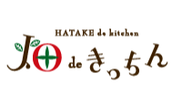
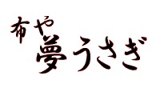
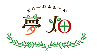

就労継続支援B型 かんてん茶房 遊夢(ゆうむ) 体にやさしい家庭料理レストラン 就労継続支援B型 草夢(そうむ) 公園清掃、ハウスクリーニング 就労継続支援B型 夢来(むく) 就労体験と各種交流 就労継続支援B型 夢畑(ゆめばたけ) 農産物の生産・販売 就労継続支援B型 パソコンサロン夢像(ゆめぞう) PCを使って夢をカタチに 相談支援事業所 待夢(たいむ) 利用者の総合窓口と相談支援 共同生活援助 グループホーム多摩草むら 就労継続支援B型 夢草子(ゆめそうし) 販売活動、印刷物制作、アート作品制作 就労継続支援B型 草むらde夢  多摩センターの本格派レストラン  布小物のデザイン・製造・販売  カレーやお惣菜、野菜・果物などの提供、販売